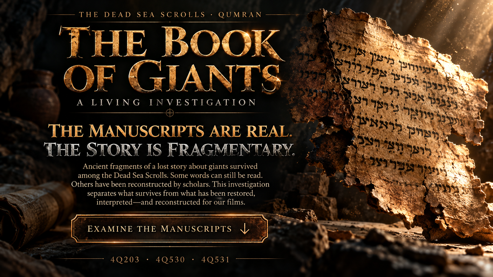
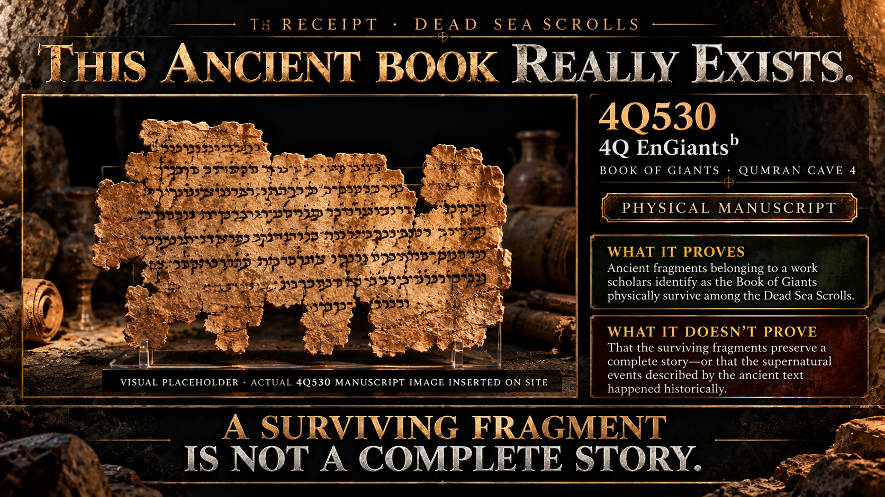
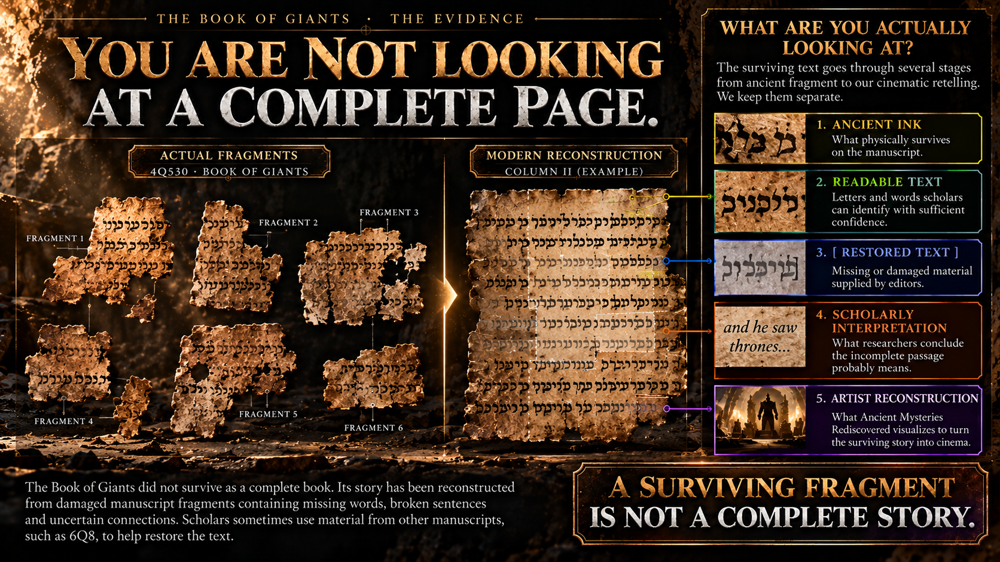
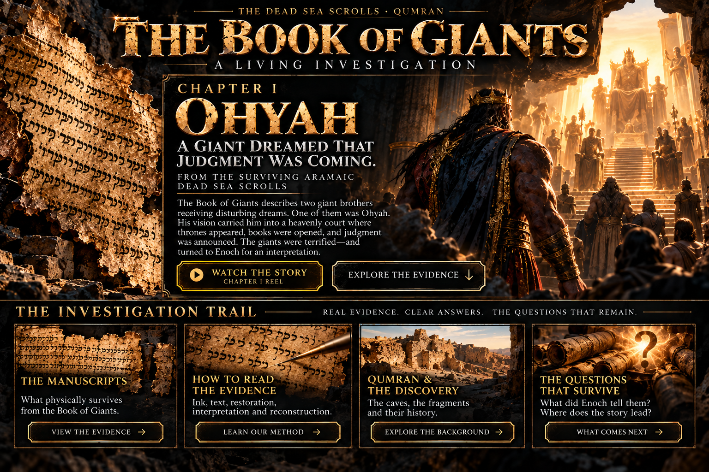
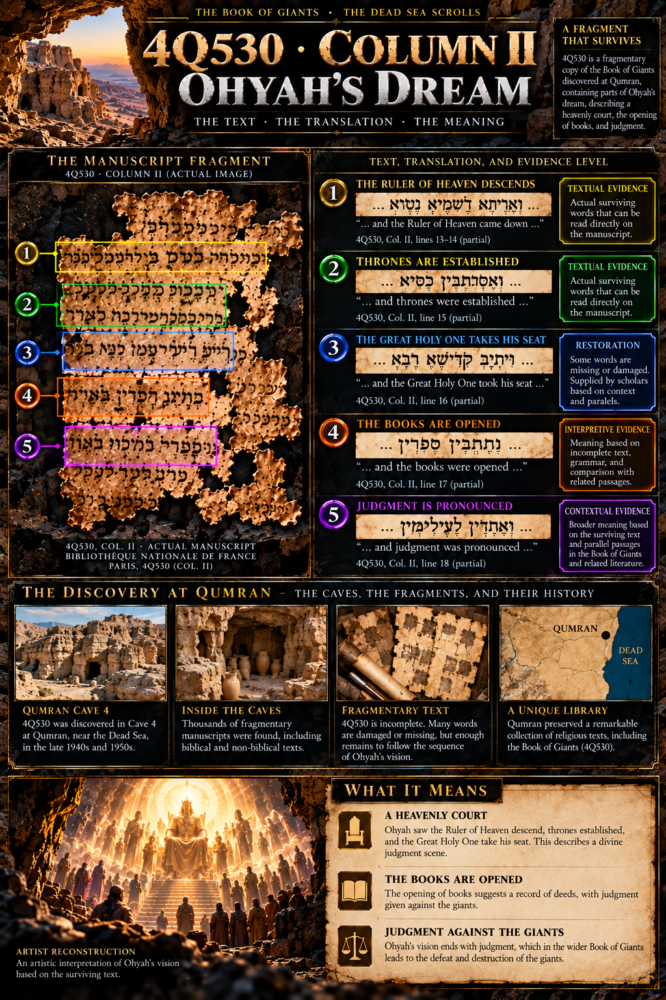
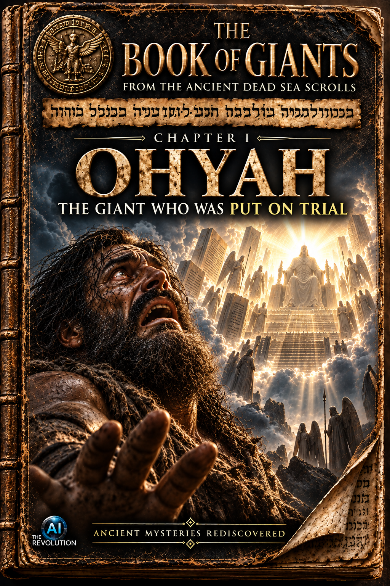
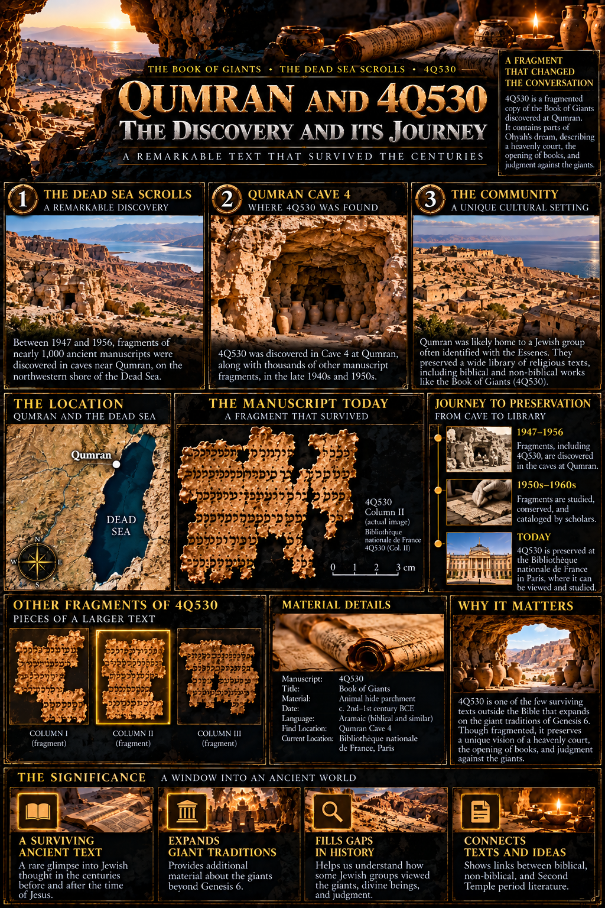

Book of Giants · Qumran Cave 4
Physical manuscript
The Dead Sea Scrolls · Qumran
The Book of Giants
A Living Investigation
The manuscripts are real.The story is fragmentary.
Ancient fragments of a lost story about giants survived among the Dead Sea Scrolls. Some words can still be read. Others have been reconstructed by scholars. This investigation separates what survives from what has been restored, interpreted—and reconstructed for our films.
Examine the manuscriptsThe receipt · Dead Sea Scrolls
This ancient book really exists.

Physical manuscript record4Q5304Q EnGiantsb
Official archive record: Plate 437 · B-284596 · scanned infrared negative · recto.
View the genuine photograph at the IAA archive ↗ The IAA image is linked, not reproduced here, pending explicit public-display permission.What it proves
Ancient manuscript fragments belonging to a work scholars identify as the Book of Giants physically survive among the Dead Sea Scrolls.
What it doesn't prove
The surviving manuscripts do not establish that giants historically existed or that the supernatural events narrated in the ancient story occurred.
A surviving fragment is not a complete story.
How to read this investigation
Five levels. Five different claims.

- 1
Ancient ink
What physically survives on the manuscript.
- 2
Readable text
Letters and words that can be read with sufficient confidence.
- 3
[Restored text]
Missing or damaged material supplied by editors.
- 4
Scholarly interpretation
What researchers conclude the incomplete evidence may mean.
- 5
Artist reconstruction
What Ancient Mysteries Rediscovered visualizes in order to transform the surviving narrative into cinema.
We will never present all five as the same thing.

The Book of Giants · Chapter I
Ohyah
A giant dreamed that judgment was coming.
From the surviving Aramaic Dead Sea Scrolls
Two giant brothers, Hahyah and Ohyah, receive disturbing dreams. Ohyah's vision carries him into a heavenly judgment scene: the Ruler of Heaven descends, thrones are established, books are opened and judgment is pronounced. The giants are terrified—and send Mahaway to seek an interpretation from Enoch.
The manuscript behind the story
4Q530 · Ohyah's dream

The sequence below is a cautious paraphrase of the episode described in specialist scholarship. It is not a transcription of the concept artwork.
- 01The Ruler of Heaven descendsReadable text / scholarly translation
- 02Thrones are establishedReadable text / scholarly translation
- 03The Great Holy One takes his seatPartly restored text
- 04The books are openedScholarly interpretation of fragmentary text
- 05Judgment is pronouncedJudgment context; object not overstated
Evidence boundary
The wider narrative concerns the giants and judgment. This display does not rewrite the damaged dream passage as the more explicit claim “judgment was pronounced against the giants.”
Compare the 4Q530 manuscript profile ↗Investigation pause
Who was being judged?
The manuscript gives us a heavenly court.
Books are opened.
Judgment is pronounced.
But the surviving fragment does not hand us a perfectly preserved modern explanation of every element in Ohyah's dream.
So look at what happens next.The giants' response
The giants were afraid.
Textual evidenceThey needed someone who could explain it.
Enoch
In the Book of Giants tradition, Enoch is the figure the giants turn to for interpretation.
Mahaway
The surviving narrative describes Mahaway being sent to seek Enoch. It does not preserve a literal gathering of kneeling giants before him.

Watch the story
Story vs evidence
Artist reconstructionThe film turns a damaged narrative into one continuous encounter. The audit keeps its choices separate from what the manuscripts support.
Watch the Ohyah Reel ↗Qumran & the manuscripts
A fragment enters the modern record.

4Q530 · 4Q EnGiantsb
The Israel Antiquities Authority catalogues Plate 437, B-284596 as a recto image of manuscript 4Q530, identified as 4Q EnGiantsb.
Scanned infrared negative
The archive records the plate as photographed by Najib Anton Albina in June 1960. That is the image date, not a claim about when the fragments were discovered.
Aramaic and fragmentary
Specialist manuscript profiles identify 4Q530 as one of the better-preserved Book of Giants witnesses, while stressing that its surviving text remains incomplete.
Where the investigation stands
What the evidence supports—and what it does not.
Supported by the surviving textual evidence
- The Book of Giants existed in antiquity.
- Ohyah is named in the surviving tradition.
- Ohyah experiences a dream.
- His vision depicts heavenly judgment.
- Books are opened.
- Judgment is pronounced.
- The giants react with fear.
- They seek Enoch's interpretation through Mahaway.
Not established by the manuscripts
- Ohyah's exact physical appearance.
- His precise height.
- The exact physical appearance of heavenly beings.
- AMR's architecture and landscapes.
- Horses and scale compositions.
- The heavenly-hand visualization.
- A literal gathering of giants kneeling before Enoch.
- That the supernatural events narrated by the ancient work occurred historically.
The existence of an ancient manuscript establishes the existence of the ancient story—not the historical occurrence of its supernatural events.
The Book of Giants · Investigation continues
The giants sent for Enoch.
What did Enoch tell them?
The giants sought an interpretation. Only fragments of the answer survive.
Sources
Follow the evidence yourself
Dead Sea Scrolls Digital Library · 4Q530
Used for: manuscript designation, plate metadata, photographer, image type, side, and the official archive locator.
Open Plate 437 · B-284596 ↗Dream narratives in the Aramaic Dead Sea Scrolls
Used for: the role of dream-vision revelation and the literary setting of the Book of Giants among Aramaic scrolls.
Read the SBL Press open-access volume ↗A Handbook of the Aramaic Scrolls from the Qumran Caves
Used for: the 4Q530 manuscript profile, content synopsis, and the cautious reconstruction of Ohyah's dream and Mahaway's intermediary role.
Read the open-access handbook ↗Reading the Dead Sea Scrolls: Essays in Method
Used for: methodological context for distinguishing material texts, literary traditions, and later interpretation.
Read the SBL Press volume ↗The Book of Giants: A Critical Edition of the Aramaic Fragments
Used for: recent specialist control on the fragmentary witnesses, imaged-object references, and the limits of reconstructed arrangements.
Read the open critical edition ↗Image-rights note: the IAA record is linked rather than reproduced because the archive's current terms require express permission for public display. Once permission is documented, the masked evidence area is ready for the licensed image.